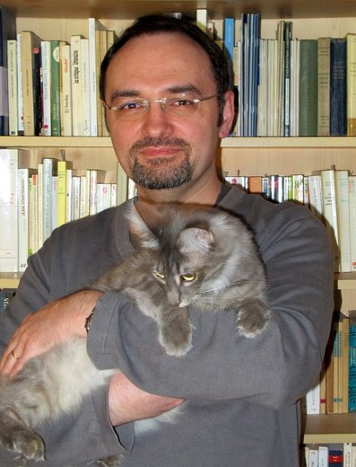

Sources
L'auteur : Jean-Philippe Jaworski

- Écrivain français, auteur du Vieux Royaume, l'univers de fiction dans lequel se déroule notre campagne.
- Avant ses romans, il a créé des documents de jeu de rôle sur le Vieux Royaume et les a publiés sur son site : la chronique du Vieux Royaume, la ville de Bourg-Preux, et plusieurs scénarios. Notre campagne part de ces documents.
- Il travaille actuellement à la publication d'un jeu de rôle réellement officiel dans l'univers du Vieux Royaume.
Droits d'auteur
Ce site est un projet de fans, sans but lucratif. Il n'est ni officiel, ni lié à Jean-Philippe Jaworski ou à ses éditeurs. Le Vieux Royaume et ses textes restent la propriété de leurs auteurs.
Les documents de jeu publiés sur La Cour d'Obéron portent la mention « Toute reproduction interdite sans autorisation ». Nous n'avons pas demandé cette autorisation : en toute rigueur, les réutiliser ici, même résumés ou réécrits, n'est donc pas permis. Nous espérons que cela ne posera pas de problème, et nous retirerons tout contenu sur simple demande.
Documents et liens
Chaque lien s'ouvre dans un nouvel onglet.
- Fiches des personnages joueurs ↗
Caractéristiques, sorts et équipement des héros (Google Sheets). - Résumé illustré de la campagne ↗
Le résumé des sessions, avec les illustrations et les annexes (PDF). - La légende du Vin de Vanaël ↗
La légende illustrée des dieux Wayland, Ochlus et Kylima (PDF). - Chronique du Vieux Royaume ↗
Histoire, régions, langues et religions du Vieux Royaume (PDF). - Bourg-Preux ↗
La ville de Bourg-Preux et la Marche Franche : histoire, quartiers, institutions (PDF). - Jean-Philippe Jaworski (Wikipédia) ↗
L'auteur du Vieux Royaume : sa vie et ses œuvres (Wikipédia). - La Cour d'Obéron : le Vieux Royaume ↗
Les aides de jeu et scénarios du Vieux Royaume sur le site de La Cour d'Obéron. - La gloire de la République ↗
Scénario officiel joué dans la campagne (PDF). - La couleur de l'argent ↗
Scénario officiel joué dans la campagne (PDF). - Gagner la guerre, la bande dessinée ↗
Source des images de Ciudalia, de Kaellsbruck et de Ressine (Le Lombard). - Photo de Jean-Philippe Jaworski ↗
Source de la photo de l'auteur.